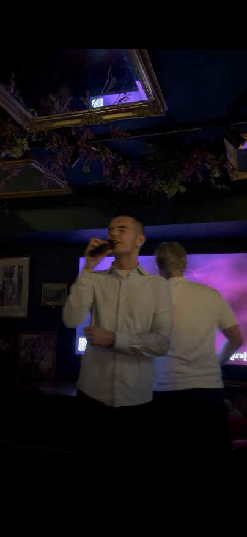

Morgunþoka yfir firðinum
Vika 1
Mynd
Dalvík

Þessi mynd er ekki bara mynd af stað. Hún er heil skrefið í því að finna hljóðið í morgninum. Eitthvað í henni fær mann til að vera kyrran og taka inn tækifærið sem var fyrir augunum.
Þetta er eintakið af augnabliki sem gerist án þess að biðja um athygli. Það birtist á réttum tíma, í réttum umhverfi og tekur sig upp að læra okkur að hægja á okkur.
“Sannleikurinn er oft þögull, en hann er alltaf þar.”
Þegar myndin er vel valin getur hún talað fyrir margar setningar. Þetta er ein af þeim sem halda áfram að koma aftur.